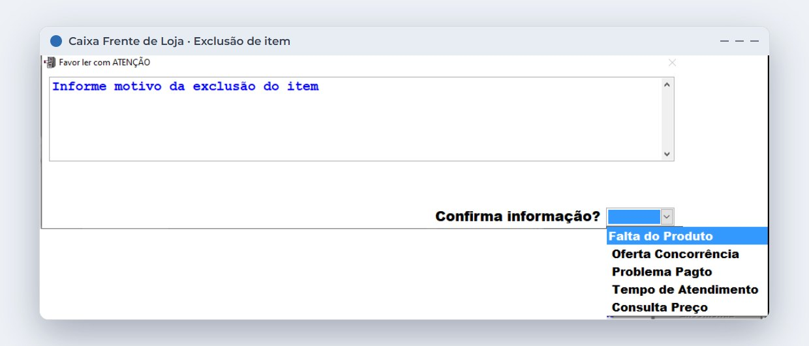
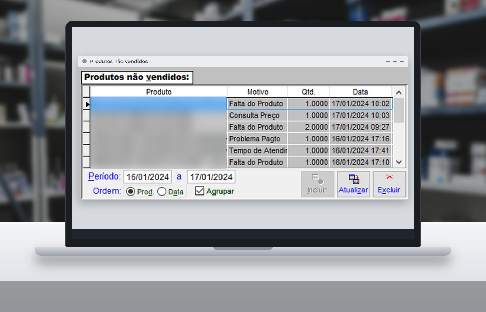
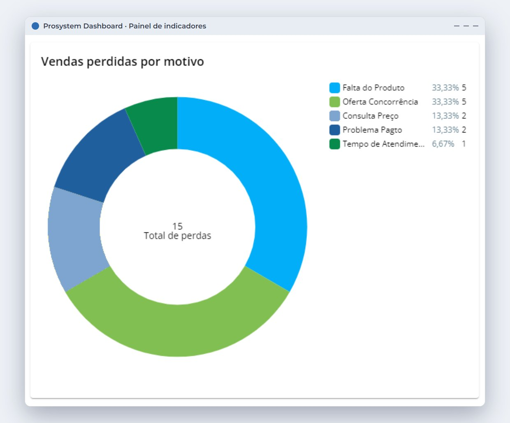

Em 30 segundos
- Venda não realizada não entra no relatório de vendas. Sem registro, a perda fica invisível.
- O indicador de perda de vendas grava o que não foi vendido e o motivo: falta, concorrência, pagamento, atendimento ou consulta de preço.
- Em cerca de 30 dias de registro já dá para identificar um padrão e montar um plano de ação.
- Cada motivo pede uma resposta diferente. Falta de produto se resolve em compras; preço, na estratégia comercial.
"Tem esse aqui?" "No momento, não." O cliente agradece e sai. Dez minutos depois, ninguém lembra do que ele pediu. No fim do dia, o relatório de vendas mostra tudo o que foi vendido e nada sobre o que deixou de ser.
Essa é a dificuldade da venda perdida: ela não deixa rastro, a menos que você crie um.
Por que essa perda é invisível
A falta de produto é a causa mais lembrada, mas não é a única. O cliente também desiste por causa do preço, de um problema no pagamento ou da demora no atendimento. Às vezes, ele só queria consultar o valor.
A falta de mercadoria já é, sozinha, um problema relevante no varejo.
de ruptura comercial média no varejo brasileiro, além de 6,11% de ruptura operacional, ambas em alta em relação a 2022.Fonte: Pesquisa Abrappe de Perdas no Varejo Brasileiro 2024, citada pela Central do Varejo. O dado é do varejo em geral, sem recorte específico de farmácias.
Esse número não diz quanto a sua farmácia perde. Para descobrir, a saída é medir na própria loja.
Quanto ela pode custar
Uma conta simples ajuda a dimensionar o problema. Conte, por alguns dias, quantos atendimentos terminam sem venda e use a sua média de valor.
Simule o valor das vendas perdidas
Troque os exemplos pelos números da sua farmácia.
Nem toda perda é recuperável. Quem só veio consultar o preço talvez nunca comprasse. Mesmo assim, conhecer o tamanho do problema ajuda a decidir onde agir primeiro.
Como registrar os motivos
No Prosystem, o registro acontece no momento do atendimento. Ao excluir um produto da tela de vendas ou uma pré-venda, o sistema abre uma janela para informar o motivo.

A preferência "Registrar Produto Não Vendido" define como isso funciona na loja: sem registro, com motivo obrigatório ou com motivo opcional. Para que a análise seja confiável, o motivo obrigatório costuma dar um retrato mais completo.
Depois, os produtos não vendidos podem ser consultados nas funções do Caixa Frente de Loja ou no relatório "Perda de Vendas", no Admin Retaguarda.

No plano Plus, o Painel de Indicadores também mostra as vendas perdidas por motivo em um gráfico.

Quer saber por que sua farmácia perde vendas?
Fale com a ProSystem e veja como registrar os motivos no balcão e acompanhar os resultados nos relatórios.
O que fazer com cada motivo
Depois de cerca de 30 dias de registro, os motivos tendem a formar um padrão. Cada um aponta para uma área diferente da farmácia.
| Motivo | O que pode indicar | Por onde começar |
|---|---|---|
| Falta do produto | Falha na compra ou estoque incorreto | Revise a sugestão de compras e o estoque mínimo dos itens mais citados |
| Oferta da concorrência | Preço fora do mercado em itens que o cliente compara | Reavalie o preço desses itens, olhando também a margem |
| Problema de pagamento | Forma de pagamento ou condição indisponível | Confira as formas aceitas e os horários em que o problema se repete |
| Tempo de atendimento | Fila ou equipe insuficiente em certos horários | Compare as ocorrências com os horários de maior movimento |
| Consulta de preço | Cliente pesquisando antes de decidir | Treine a equipe para oferecer alternativas e registrar o contato autorizado |
Comece pelo motivo mais frequente e pelos cinco produtos mais citados. Mude uma coisa de cada vez e compare o mês seguinte com o anterior.
Explique à equipe o objetivo do registro. Ele serve para melhorar a compra e o preço, não para cobrar o vendedor por cada desistência. Sem essa conversa, o motivo tende a ser preenchido às pressas.
Perguntas frequentes
O que é o indicador de perda de vendas?
É o registro das vendas que não se concretizaram e dos seus motivos, como falta do produto, preço mais baixo na concorrência ou demora no atendimento. A análise ajuda a identificar padrões e definir ações.
Em quanto tempo o indicador começa a mostrar resultado?
Com o registro feito de forma consistente, um período de 30 dias já costuma permitir a identificação de um padrão nas perdas.
Como o Prosystem registra uma venda perdida?
Ao excluir um produto da tela de vendas ou uma pré-venda, o sistema pode pedir o motivo. Os dados ficam disponíveis nas funções do caixa e no relatório Perda de Vendas, e o plano Plus também os apresenta no Painel de Indicadores.
Ruptura e perda de vendas são a mesma coisa?
Não. Ruptura é a falta do produto. Perda de vendas é mais ampla e inclui outros motivos, como preço, pagamento e tempo de atendimento.
Fontes
- Indicador de perda de vendas (Universidade Prosystem)
- Novo Dashboard: painel de aferição de indicadores (Universidade Prosystem)
- O que é ruptura de estoque e por que ela afeta as vendas no varejo (Central do Varejo)
Conteúdo informativo, atualizado em 30 de outubro de 2026. Telas reais do Prosystem, com nomes de produtos ocultados e dados de exemplo. Os valores da simulação são exemplos.